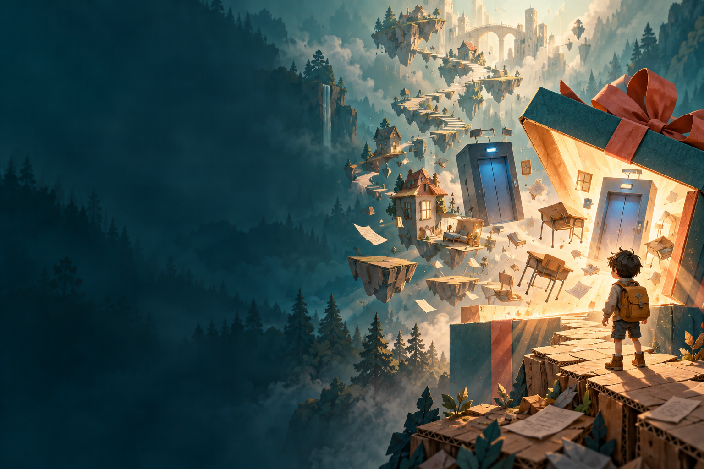
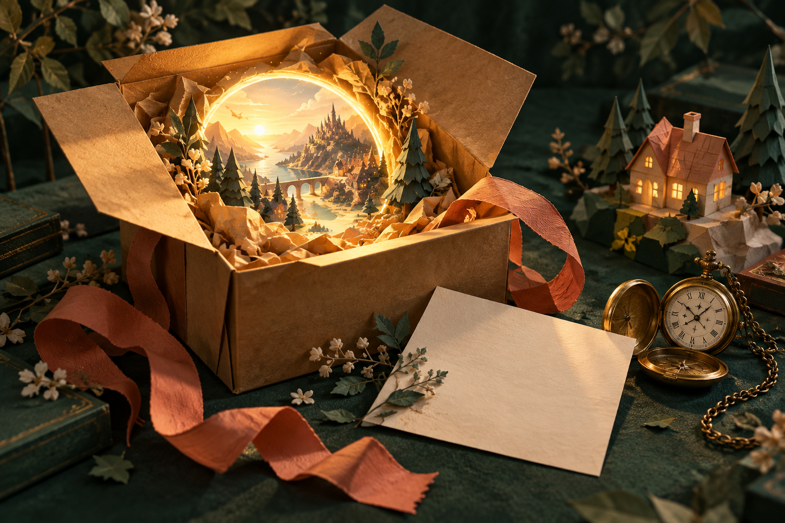

礼物，不总是如你所愿。
自选或随机的能力奖励，让下一次挑战有了新的解法。

A LITTLE GIFT. A BIG ADVENTURE.
给小时候的自己
别人给你的，是能力。
你选的，是通关方式。
WINDOWS PC / 单人 · 平台跳跃 · 时空解谜

TO: MY YOUNGER SELF / 宣传概念插画01 / 故事从一个盒子开始
一个没有署名的盒子，
把你送进了回忆的另一面。
走过家、学校与陌生的公司，在跳跃、时空解谜和限时挑战中，寻找写给小时候自己的答案。
礼物已经收到。冒险，才刚刚开始。自选或随机的能力奖励，让下一次挑战有了新的解法。
冲刺、造物、回溯。用手里的能力，重新理解脚下的关卡。
掉落后回到检查点。挑战成绩不会剥夺你看到故事结尾的资格。
02 / 随身冒险手册
8 种能力，不止 8 种可能。
点开一枚徽章，找到你的下一招。
01 / 移动 · DASH
沿移动方向快速冲刺，把不够远的一跳接成一条新的路。
按左 Shift 施放。空中使用后，需要落地才能恢复空中次数；冷却结束不代表可以在空中再次冲刺。
FIRST STEPS
W A S D 移动 鼠标 观察
Space 跳跃 E 交互 Esc 暂停
观察平台间距和高度。二段跳保留水平惯性，冲刺补足横向距离；不要在没有落脚点时把所有位移一次用完。
可以。按时达标可挑选能力升级，超时则确认随机奖励。掉落会回到检查点，但挑战计时继续；主动重试未结算挑战可重新计时。
按住 Q 查看预览，松开后放置。检查前方是否被挡、是否处于禁建区域，以及已放平台是否达到上限；已有平台消失后会腾出名额。
C 创建分身并切换操控，再按 C 返回本体，两者保留各自的位置。R 回溯自身会清除分身，操作前先确认哪一边需要留在机关附近。
03 / 领取你的礼物
在浏览器里启程，
或把这份礼物带回电脑。
04 / 寄件人
还记得小时候那种感觉吗？
一扇门后面，就可能有一个全新的世界。
我们把这份好奇心装进游戏里：用熟悉的空间、出乎意料的能力，和不止一种的通关方式，做一份可以亲手拆开的礼物。
希望你在这里，也能找到那个愿意说
“让我再试一次”的自己。